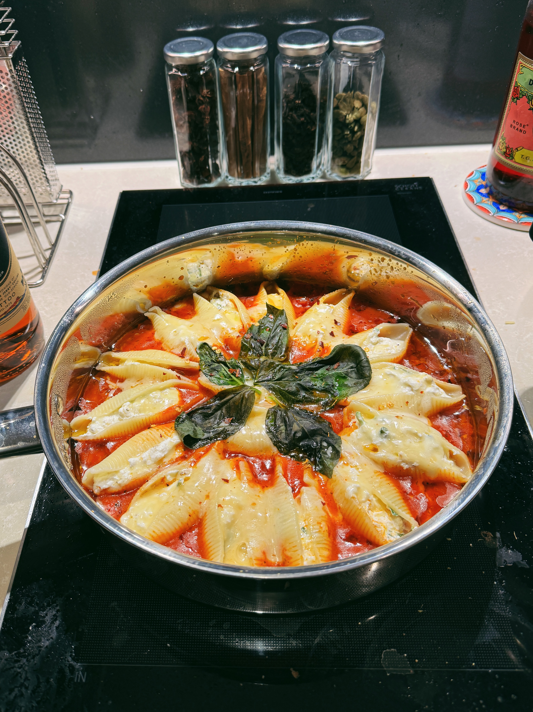

No-bake Cheesy Stovetop Stuffed Shells

Description
No oven? No problem! This recipe is all about making stuffed conchiglioni that is oozing with cheesy goodness and set on top of delicious marinara sauce - all done on a stovetop!
Let's get started!
Ingredients
Serves 2
- Half a can of pureed tomatoes
- A quarter of an onion, chopped
- 3 cloves of garlic, chopped
- 15-20 dried conchiglioni shells - depending on how many you can lay out in your pan
- Parmesan, mozzarella, and ricotta for filling
- Dried oregano
- Fresh basil
- Olive oil
- Chilli flakes
Steps
- To make the marinara sauce, first combine pureed tomatoes, onion, garlic, dried oregano, chilli flakes, and olive oil in a pot.
- Bring the sauce to a simmer, then lower the heat and allow it to continue simmering for about 45 minutes, until droplets of oil are visible on the surface of the sauce.
- Add salt and/or pepper to taste, then set the sauce aside.
- In a pan, cook the shells in salt water according to packet instructions, but undercook by one minute so they are firmer for the process of filling.
- Run the shells under cold water and drain, then set aside.
- To make the filling, combine the parmesan, mozzerella, ricotta, basil, salt and pepper in a bowl.
- Carefully fill each shell with 1-2 tablespoons of the mixture, while making sure that the shells do not break and the filling does not spill out of the shells.
- Pour the marinara sauce into a pan so that the sauce just covers the entire base of the pan. Lay the filled shells on top of the sauce and sprinkle more cheese on top.
- Cover and cook for a few minutes. The dish is ready when all the cheese on top has melted.